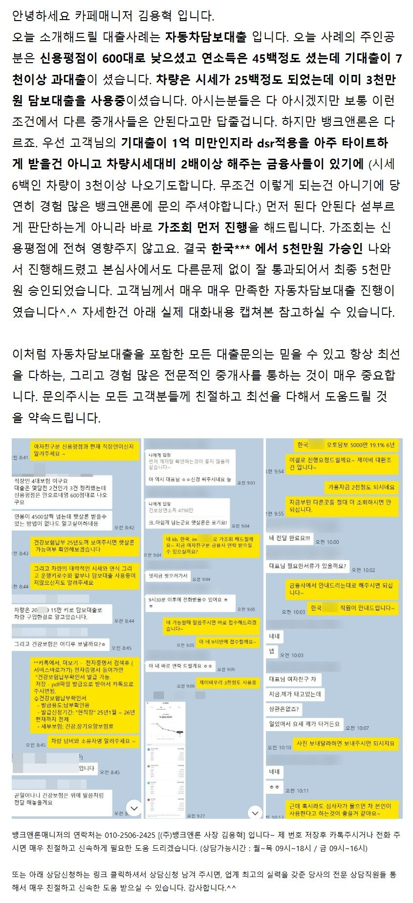
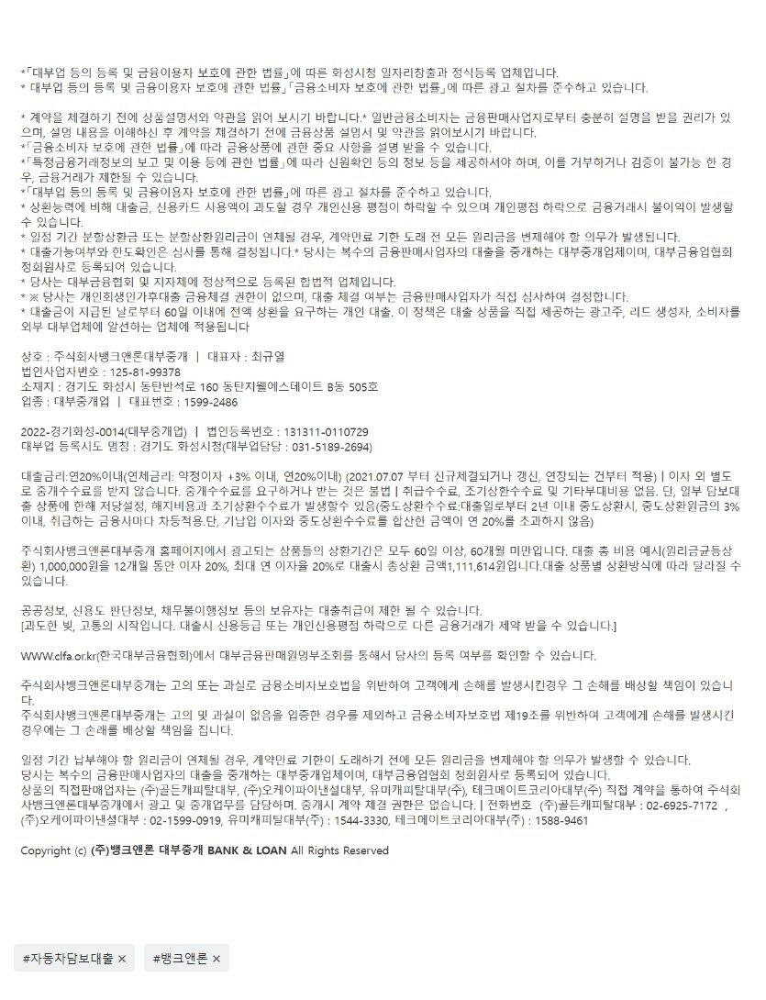

대출사례[자동차담보대출] 시세25백이하 차량으로 5000만 승인사례. (연소득 45백만원에 기대출은 7천만이상. 신용평점 600점대)원본 등록일 2026.01.13 · 글 번호 3764 · 백업 당시 조회수 1718  상담신청 -> https://cafe.naver.com/cityman88/29497  https://cafe.naver.com/cityman88/309908